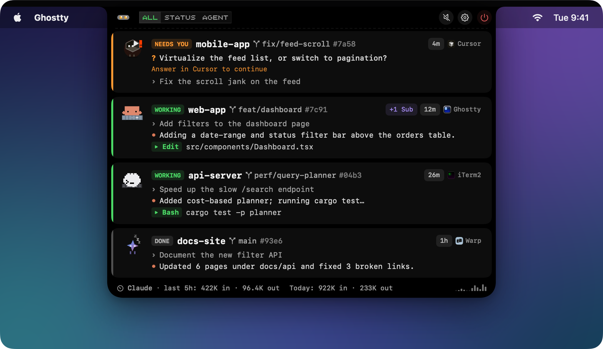
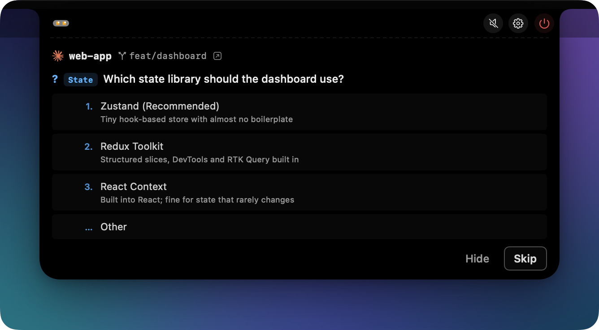

One island for coding agents.
Morrow puts sessions, approval prompts and playback in a notch on macOS. The same hook contract now runs on Linux and Windows through a Tauri shell.
Open source on GitHub, with no account or telemetry.

Agent sessions in the notch
Morrow watches the agents you already run. Nothing has to be pasted into a new window.
Sessions
Every agent appears with its source, current tool and last answer.
Approvals
Permission prompts land in the panel. Approve or deny there, and the tool call keeps its real result.
Music playback
Track, lyrics and volume stay in the right wing. Prayer reminders and status badges follow one priority rule.

One contract, three desktops
The same hook envelope, the same fixtures and the same capability table run on macOS, Linux and Windows. What an OS cannot do is shown as a reason, never as a silent failure.